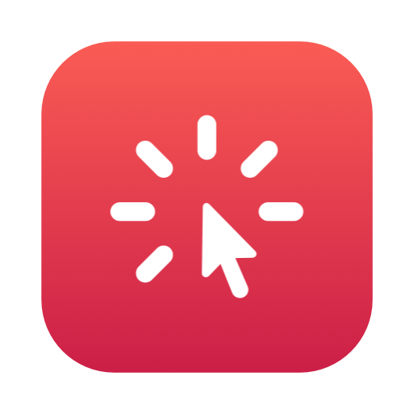

TinyMacro is a tiny mouse and keyboard recorder for macOS. Press record, do your thing, press play. Loop it, speed it up, or turn it into its own app.
Free & open source (MIT) · macOS 14 Sonoma or later · Apple Silicon & Intel · under 1 MB
Everything sits in one row of buttons. There's nothing to set up and no scripting to learn.
Captures mouse moves, clicks, double-clicks, drags, scrolling and keystrokes, including modifier keys.
Uses each event's own hardware timestamp and a real-time playback thread, so replays keep the pace you recorded.
Play once, repeat a set number of times, or run until you stop it, with an optional pause between runs.
Play anywhere from 0.25× (slow motion) to 100× (as fast as your Mac can go).
Start and stop from any app. Pick your own shortcuts in Prefs. TinyMacro strips them out of the recording automatically.
Turn a recording into a standalone .app that plays the macro when you open it. Handy for sharing or for a Dock shortcut.
Recordings are small .tinyrec files. Double-click one to load it.
If you stop mid-playback, TinyMacro releases any keys or mouse buttons it was holding down.
No network access, no analytics, no accounts. Your recordings never leave your Mac.
Four steps, and you only do the first one once.
The defaults are below. Change any of them in Prefs.
| Action | Default | Notes |
|---|---|---|
| Record / stop recording | ⌃⌥⇧R | Control + Option + Shift + R. Works from any app. |
| Play / stop playback | ⌃⌥⇧P | Also stops an exported macro app. |
| Open · Save · Export | ⌘O ⌘S ⌘E | When TinyMacro is the active app. |
| Prefs | ⌘, | Opens the settings window. |
| Setting | Options |
|---|---|
| Playback speed | 0.25×, 0.5×, 1×, 2×, 4×, 8×, 16×, 50×, 100× |
| Repeat | Play once · Repeat N times · Repeat until stopped |
| Wait between runs | Any number of seconds (decimals OK). Not affected by speed. |
| Options | Keep window on top · Record mouse movement (or just clicks) · Hide while playing |
| Permissions | Live status for Accessibility and Input Monitoring, with buttons that open the right System Settings page |
Download, unzip, and drag TinyMacro.app into Applications.
xattr -dr com.apple.quarantine /Applications/TinyMacro.appYou need the Xcode Command Line Tools (xcode-select --install). There's no Xcode project; one script does it.
git clone https://github.com/GH_USER/TinyMacro.git
cd TinyMacro
./build.sh # → build/TinyMacro.app
open build/TinyMacro.appmacOS requires Accessibility for any app that sends mouse clicks or keystrokes (playback), and Input Monitoring for any app that listens to the keyboard (recording). TinyMacro only uses them while you're recording or playing. It has no network code, so nothing is ever sent anywhere.
Quit TinyMacro completely (⌘Q) and reopen it. macOS only applies new permissions on launch. If you built it yourself and then rebuilt it, macOS may see it as a new app. Remove TinyMacro from both lists with the – button and add it again. Running scripts/setup_signing.sh once creates a local signing certificate so permissions carry over between builds.
TinyMacro replays clicks at the exact screen positions you recorded. Keep windows where they were when you recorded, and use the same display setup, for reliable results.
Press your Play shortcut (⌃⌥⇧P by default). It works even while the macro is controlling the mouse, and even during the pause between runs.
No. An exported app is self-contained. It needs its own Accessibility permission the first time you open it, and it quits when the macro finishes.
TinyMacro is an independent, open-source project inspired by the simplicity of TinyTask for Windows. It isn't affiliated with or endorsed by TinyTask's authors, and it shares no code with it.